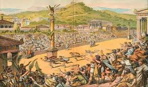

Blog Post #3: The Origins of Sports Betting
 While there has always been small-scale betting for thousands of years, the earliest known instance of extensive sports betting was during the Olympic Games in ancient Greece over 2,000 years ago. The ancient Greeks began to popularize sports betting, which later became embraced and strengthened by the Romans. Even though the two empires experienced rises and falls, the culture of sports betting continued to thrive and evolve across history.
Betting in Ancient Greece and Rome
In ancient Greece, athletic contests were not mere entertainment, they were bound up with religion, status, and civic pride. The Olympic Games were the highlight of the Greek world, and spectators would wager on footraces, wrestling, and chariot racing. Betting tended to be informal among peers, but it created a shared sense of excitement and investment in athletes' performances.
When the Romans adopted Greek traditions, they amplified wagering culture into something even larger. Gladiatorial combat and chariot races in Rome became focal points for public gambling. Citizens across social strata, from aristocrats to laborers would placed bets on which combatant would triumph. The Roman arenas like the Colosseum were not only stages for spectacle but also hubs of widespread gambling activity; historians note that wagers, betting tokens, and early versions of odds were part of the scene. See more about the Roman Colosseum at History.com.
The Middle Ages and Beyond
After the fall of Rome, sports betting transformed rather than disappeared. In medieval Europe the focus shifted to jousting, archery, and horse racing. Nobility often wagered on knights and riders, while common folk placed bets on local contests. Horse racing in England, in particular, began to formalize into a structured sport. Tracks, rules, and dedicated bookmakers emerged by the 1600s and 1700s. That professionalization laid the groundwork for modern betting systems and odds calculations.
The development of organized horse racing and betting houses in Britain influenced gambling systems globally. For context on how horse racing became institutionalized, check the website on Britannica.
Modern Sports Betting Culture
The 20th century expanded sports betting into a global pastime as professional leagues (baseball, soccer, cricket, etc.) grew in popularity. Restrictions and legality varied by country, but informal and underground betting persisted even where it was outlawed. The real game-changer arrived with the internet: online sportsbooks, daily fantasy platforms, and mobile apps made participation easy and social.
Platforms like DraftKings, PrizePicks, and others digitized both betting products and communities. Meanwhile, discussion hubs such as Reddit’s r/sportsbook and specialized Discord servers foster analysis-driven culture around picks, odds, and statistical modeling.
Cultural Perspectives
Sports betting’s meaning shifts by culture and era. Ancient Greek betting emphasized honor and athletic prowess. Roman wagering connected spectacle to civic life. Medieval betting tied into nobility and local identity. Today, betting also reflects data literacy, fandom, and community — people trade models, spreadsheets, and memes as much as they trade bets.
Symbols and Artifacts
The artifacts of wagering tell its history: laurel crowns in Greece, tokens and slips in Rome, race cards at horse tracks, and modern betting apps and digital slips. Each artifact is a cultural marker revealing how communities engage with chance, prediction, and competition.
Conclusion
The history of sports betting shows that it has never been only about money. Across time it has united people around competition, excitement, and shared narratives. From ancient stadiums to modern online forums, betting built communities, vocabularies, and rituals that persist today. Recognizing these origins helps explain why sports betting remains a rich and culturally embedded practice — one that blends risk with meaning.